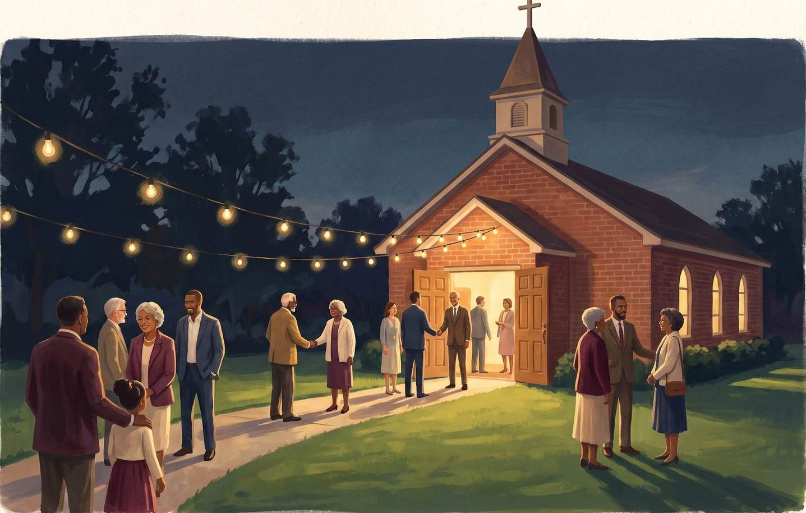
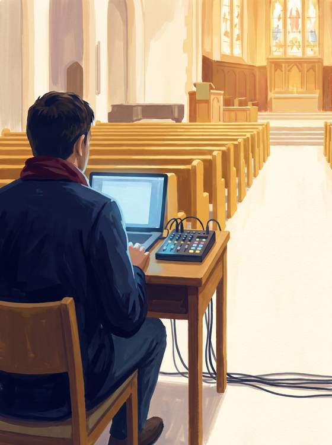
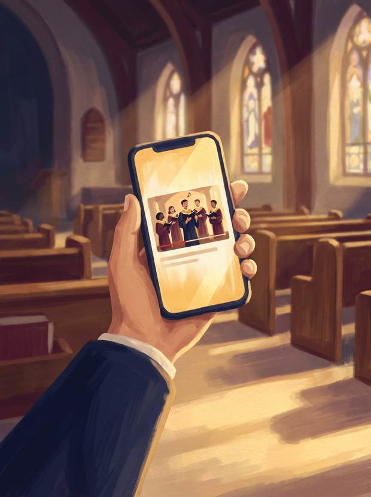
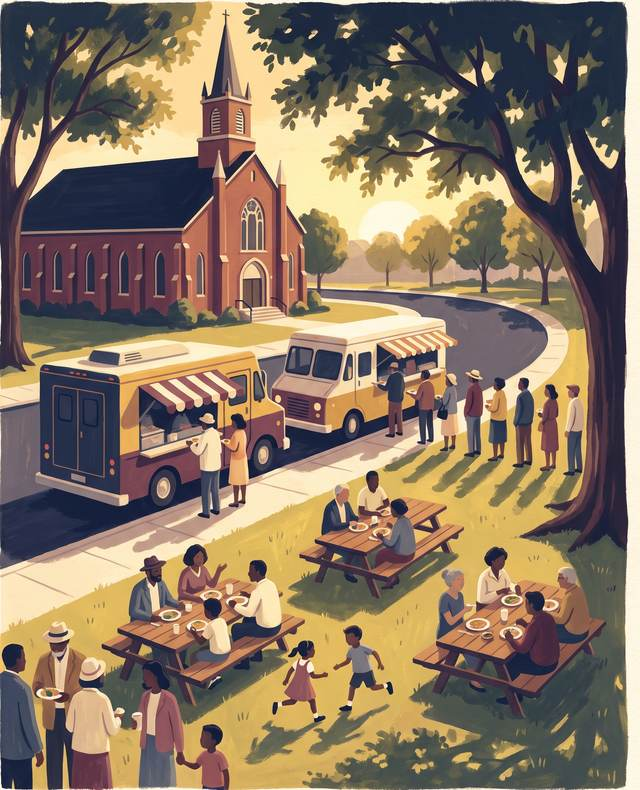
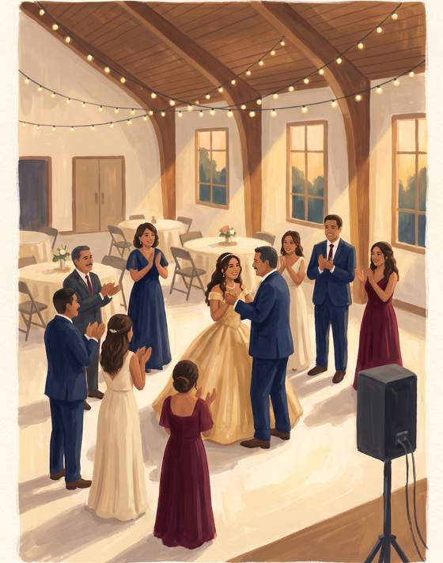
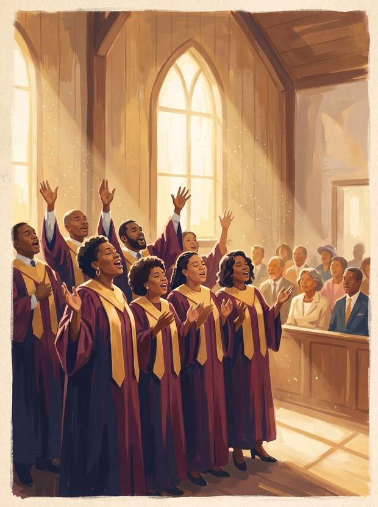
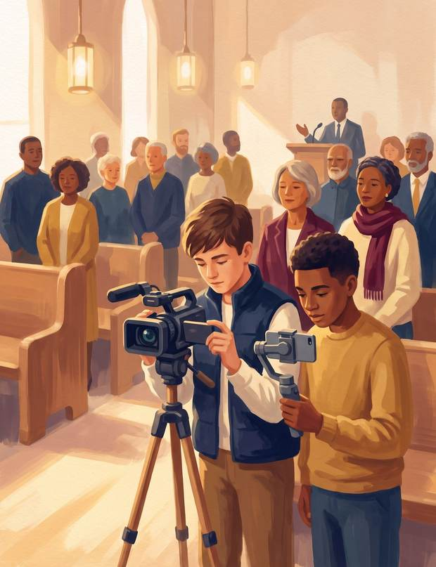
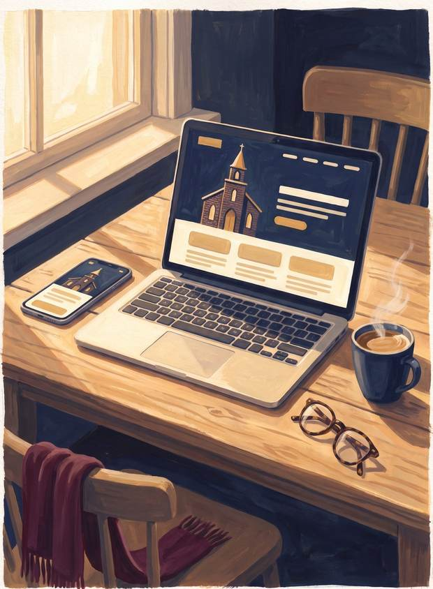
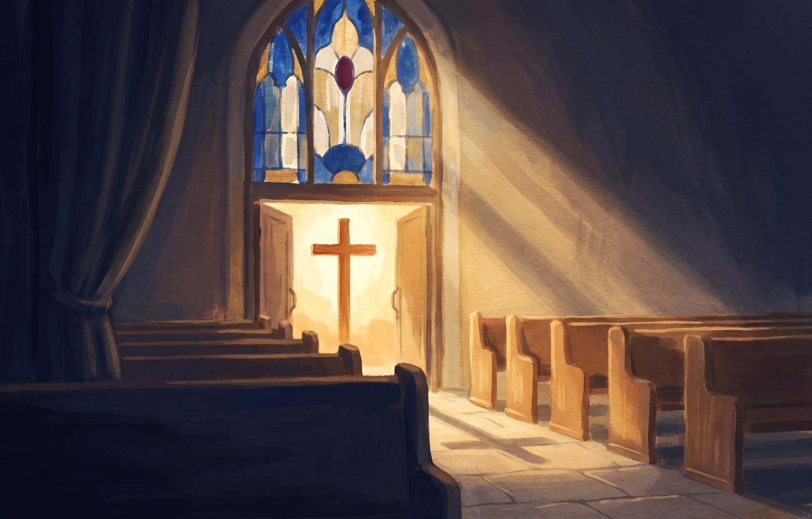

A media and growth plan for Bethel's 60th year. Reliable Sundays, a welcoming front door online, and events that bring young families through the doors.
Bethel is not starting from nothing. The hardest part of media work has been happening faithfully for years. It simply is not reaching anyone yet.
Someone here has recorded and posted a sermon nearly every week for years. That is real, sustained effort. The videos are just not titled, clipped, or placed anywhere people actually look.
One aging laptop with a failing battery runs everything, and right now no picture is reaching the front monitors because of it. The monitors themselves are fine. Two programs in the streaming chain, CameraLive and CamTwist, are no longer updated by their makers, which pins the Mac to an operating system that stopped receiving security fixes in 2024. There is no backup when it fails.
Sunday worship streams on Zoom, which is invitation-only by nature, so no public link exists for a neighbor to find. The Facebook page has 40 followers and has been quiet since early last year. There is no Instagram and no TikTok.
Nothing here needs a large budget. It needs the existing effort pointed somewhere useful, a few one-time repairs, and a steady hand each week. That is this plan.
The Hartford Institute for Religion Research surveyed more than 7,000 congregations in late 2025 and found median attendance had risen for the first time in four decades. But here is the part that decides what Bethel should do about it: only 8 percent of new attenders had never been to church before. Sixty-nine percent switched from another congregation.
Growth today is mostly people choosing between churches. And people choose the church they can find, see and hear before they ever walk in. That is not a theological problem, it is a visibility problem, and it is the one thing on this list that money and effort can actually fix.
A church that feeds its elders, teaches its children to read, and lends the neighborhood its room is not a church with nothing to say. Its story is just not leaving the building. That is the one problem this whole page exists to fix, so the rest of it is about what we do, not what I found.
An agency charging $1,500 to $3,500 a month needs Bethel to never learn this work. If you got good at it, they would lose the account. My plan ends the opposite way. Within a year your own young people run the cameras and the posting, and I direct. You are buying a capability, not a subscription.
I am 25 and I am from this city. You can hire a marketing company in another state that has never set foot on the West Side, or you can hire someone a sixteen-year-old at Edgewood will actually listen to. That is not a service I learned. It is just who is standing here.
I searched the Express-News, KSAT, KENS5 and the Current for coverage of this church. There is none. Sixty years on this block, a city senior center in your fellowship hall, twenty neighborhood children in a summer reading program, and not one article. I interned at the San Antonio Current. I know how to bring them a story worth running.
I am one person, not a firm. I work weekends elsewhere right now, which is exactly why training your own people is built into the plan from the first month rather than added later. That starts with the volunteers already covering Sunday, not with young people who have not been recruited yet. The job gets small enough that an ordinary person can run it, and the youth team is built on top of that rather than underneath it. Hold me to results at 90 days and walk away if they are not there.
Bethel does not need a big equipment project. A volunteer is already building the production computer at no cost. What the room needs is order: everything labeled, everything in one place, and one page on the desk that tells whoever sits down what to press.
The goal is simple. A volunteer sits down on Sunday morning, follows the sheet, and it works, every week, with a spare machine ready if it does not.

Organize the room. Cables run, tied and labeled at both ends. Every input marked so nobody is guessing which one is the sanctuary feed. One clean workstation instead of a pile. Spares and adapters in a labeled box rather than a drawer. Then a single laminated page taped to the desk: turn this on, open this, press this, and here is who to call.
Set up the volunteer-built computer as the streaming machine: OBS Studio in place of the two unsupported programs, the presentation software the team already knows, the YouTube channel, and a wired run to the front monitors. That last part matters. The monitors are fed today by AirPlay, which is an Apple feature and will not exist on the new machine, so the feed becomes a cable instead of a wireless link that drops. Then train the AV team on it, on their own machine, until they can run a Sunday without me in the room.
One stream leaves the building and lands everywhere at once. OBS sends a single feed to a free relay service, and the relay delivers it to the YouTube channel Bethel already owns and to the Facebook page at the same moment, with both platforms' comments readable in one window so a prayer request never goes unanswered. And Zoom retires. It was doing a job it was never built for: a meeting room is invitation-only by nature, so no neighbor could ever find the service. Members who watched on Zoom get a simpler door, one public link that works on any phone, and somebody walks them through it once. Two platforms is deliberate: Facebook is where Bethel's people already are, YouTube is where the city searches, and every platform past those two only adds ways for a Sunday to break. Short clips for Instagram or TikTok get cut from the recording afterward, which is a weekday job, not a Sunday one.
So that a failure on Sunday is a ten-minute problem and not a lost service. The new PC is the primary. The MacBook stays exactly as it is, on power, as the warm spare, with its own printed page beside it. A phone is the last resort, on Facebook Live until the YouTube channel passes fifty subscribers and unlocks going live from a phone. That fifty-subscriber rule only limits phones: streaming from the computer has no minimum, so YouTube live works from day one. And OBS records to the hard drive while it streams, so the sermon survives even when the internet does not. The same rule covers the things that are not machines: the video archive lives in two places, and at least two people hold the passwords to the church's accounts.
Bethel already holds a CCLI Streaming Plus license, verified, renewing in December 2026. That covers everything this plan puts online, including services that use backing tracks, so there is nothing to buy. It goes in the runbook and on the church calendar, because a lapse mid-year is the real risk. The only open license is CVLI, and only if the board decides to hold movie nights.
The three TVs were fed by AirPlay, an Apple feature that does not exist on the new Windows machine. There are four ways to replace it. Here they all are, verdicts included, so nobody has to take my word for it.
One powered box (OREI or gofanco, with EDID control so three mismatched TVs cannot argue about resolution). The Apple TV unplugs, the PC plugs in, every screen shows the same frame at the same instant. Zero delay, nothing to pair, no wifi involved, nothing to break at 10:45.
One sender at the desk, a small box behind each TV, cheap Cat6 cable in between (OREI makes the standard 1-to-4 kit). Worth it only if the survey finds runs of 75 feet or more, or walls the cable cannot cross. If a 50-foot cable reaches, skip this.
They run 30 to 150 milliseconds behind, share the same crowded air as the church wifi and every phone in the building, and church users report drops when several run at once. It will hiccup mid-sermon eventually, and nobody can fix it from the booth. Fine for one lobby TV someday. Not for the sanctuary.
Casting means three separate compressed streams over wifi, each buffering on its own schedule, so the three TVs will not even match each other. Add update prompts, screensavers and a pairing ritual every Sunday morning. Great in a youth room. Terrible as the main feed.
One rule with no exceptions: no software that fakes AirPlay on Windows. The old system died because Sunday depended on two abandoned apps, and the whole point of this rebuild is that it never depends on unmaintained software again. A cable has no updates, no login, and no vendor to abandon it.
Everything below is billed at cost, with receipts, under the $400 not-to-exceed ceiling, and nothing gets bought without written approval first. Depending on what the room survey finds, the likely basket lands between $150 and $300.
OBS Studio is the free streaming software the United Methodist Church documents in its own guide on ResourceUMC. This is the standard path, not an experiment.
Six pieces, in the order they start paying off.
Facebook and YouTube first, because that is where Bethel's people actually are. Facebook carries the week: service reminders, event photos, celebrations, prayer updates. YouTube carries the services and gets found in search. Instagram and TikTok come later, as the youth media team's lane: short, joyful videos where people under 35 actually look, made by the young people we train rather than bought as a service.

After service, one question on camera: what is one thing you are taking with you this week?
Local businesses sponsor family events for the goodwill and visibility. Sponsors cover costs; the church keeps the community.
Sponsor tiers at $100, $250, $500 and a single $1,000 "presented by" slot match what comparable church festivals actually charge; a nearby parish festival publishes five levels running $50 to $1,000. Recognition is always written as a thank-you and never as an advertisement, which is what keeps the money tax-free for the church under IRS sponsorship rules. The whole discipline in six words: logo yes, sales pitch no.


Year one, honestly: the truck wins and the crowd stays, and that is the deal. The church's leverage is a free, guaranteed lunch crowd, not a fee. One truck only, booked by messaging the taco and barbacoa trucks the congregation already knows: "a hundred people walking out hungry at noon, free spot, paved lot, we promote you all week." Trucks need roughly 150 to 300 eaters before a vendor fee makes sense, so the fee conversation opens in year two, after counted crowds. Paperwork is light: the truck carries its own permits and insurance, the church collects a certificate of insurance and signs a property permission letter. Church money in year one: $0 to $100 an event. The real return is the hour the neighborhood spends on the lot.
Start inside the room: ask the congregation "whose business do we already know," because a connected ask closes about half the time and a cold walk-in closes maybe one in ten. Then the westside list, in order: funeral homes (church families are their whole market), tax preparers and insurance agents, taquerias and panaderias (they often say yes in food instead of money; take it and count it as a tier), credit unions (Generations FCU was born on the West Side), and H-E-B, which runs a formal community program: under $200 the local store can say yes on its own, above that it is an online application needing about eight weeks of lead time. And the math that makes the school drive concrete: 100 filled backpacks cost about $1,000 to $1,500 bought in bulk and packed by volunteers. That is one "presented by" sponsor.
Almost nothing, run right: about $75 to $125 for the first night (dessert and printed songsheets), then $50 to $90 a month. The licensing answer is to run it as what it already is, worship: open with prayer, close with prayer, sing together as a congregation, and the night is a service, which copyright law already covers. Keep it free, use the church's own musician rather than paying a per-night performer, and lean on the old songbook, because the traditional spirituals, Wade in the Water, This Little Light of Mine, are past copyright entirely. If Bethel ever wants ticketed nights or secular songs, a performance license exists at $307 a year. Until then, the cost of auditioning the city for a Music Director is dessert.

Ask a teenager on this block what they want to be. A great many will say a creator. In a 2023 Morning Consult survey of a thousand young people, 57 percent said they would become an influencer if they had the chance.
This is not a passing mood, and a small college just proved what it is worth. Last week Hendrix College, a private liberal arts school in Conway, Arkansas, hosted a week-long camp for 120 young creators. It drew close to 57 million hours of viewing and peaked at 1.45 million people watching at once. Hendrix students worked it as crew and gained real production experience, and the college's president said it brought people to Arkansas who had never heard of the place. One of those 120 students was Chris Gone Crazy, who the young people on this block already follow.
A small school became, for one week, somewhere the whole country was looking, and it did it by handing its own young people the work. The children in this neighborhood watched every minute of that. What almost none of them have is a single adult nearby who can actually teach the craft.
Bethel can be that adult. I train two to four of your own teenagers and young adults to run the cameras and help with the posting.
Before working with any young people I will complete Safe Sanctuaries training and a background check on my own time, and every minute on camera follows the two-adult rule with signed parent permission.

Mostly not megachurch pastors, and that is the point. The creators young people actually trust are small: pierced, tattooed, dressed how they dress, listening to what they listen to, and still openly about God. Their whole message is that you do not have to become somebody else first. Nobody is asking a teenager on this block to grow up into a celebrity pastor. The invitation is smaller and more honest: people who look like you are already doing this, and it counts.
By one count there were already close to 1,800 active Christian creators on TikTok alone, described as "many of them just teenagers posting from their bedrooms." Not one of them was waiting for permission, and most of them do not look like a Sunday school poster. Bethel has teenagers. Bethel has a sanctuary, a choir, a senior center and sixty years of story. What it does not have is anyone showing them how.
And the ceiling, for whoever wants it: Michael Todd (2M) ran the sound board at Transformation Church before he was called to pastor it, and that church was built largely on phone footage. Sarah Jakes Roberts (3M) and Kierra Sheard (2M) preach and sing to audiences bigger than denominations, from a phone. Nobody at Bethel has to become them. It just helps to know the road runs that far, and that it starts at the back of the room.
Every name above is a link. Tap any of them and check the numbers yourself.
Sunday operators run the stream: adults, three on a rotation, one Sunday every two weeks, one laminated page. The content team works weekdays: clips, photos, posts, interviews. The link between them is mechanical, not a metaphor: OBS records every service to the hard drive while it streams, and that recording is the content team's raw material.
Six to eight weeks, one session a week: shooting on a phone, interviewing, writing a post worth reading, editing, photography, design, media consent, and the licensing rules. Every cohort closes with a showcase Sunday: the work on the screens, the names read from the front, the parents in the room. That one hour is the graduation and the recruiting for the next group.
Trainees practice on the church's own content, which is work the church needed anyway. It goes out with their names on it. Local businesses see it, sponsor events and bulletin spots, and hire the people who made it. Graduates leave with a reel, a certificate and a reference, and their credits recruit the next group. Bethel is not renting a media person. It is becoming the place where this neighborhood learns a paid skill.

Nothing on the current site is thrown away. The domain, the history, the staff page, the ministries, the service times, the giving link and the sermon archive all move across. What changes is the order: the livestream and the calendar come to the front, where a stranger looks first. It will be designed phone-first, with large readable text for every generation, and built to the standard Google requires for its nonprofit ad grant, which is ten thousand dollars a month of free search advertising Bethel is eligible for and is not using. Updates are included in the monthly plan, so it never goes stale again.
Every week, a two-campus Catholic parish south of the city puts out a full digital bulletin: service times, the week's scriptures, the giving report, the pastor's letter, prayer requests, coming events, and the local businesses that sponsor it along the bottom. My mother has done that work for our own parish for years, so I know it from the inside. See it live right now.
Two honest roads for Bethel. If the church wants a real produced bulletin like that one, I will make the introduction to the professional who makes it, and she prices her own work. What I build is smaller and different on purpose: This Week at Bethel, one simple weekly rundown that goes out as a Facebook post, an email, and a printed half-sheet in the pews, written and sent by a trained volunteer in under an hour a week. The whole congregation reads one thing, every week, and it costs the church almost nothing to keep alive.
No monthly fee and no contract. Every item below is a fixed price with a finish line written next to it, and the board approves them one at a time. An item is done when the finish line is met, not when hours run out.
The room organized, every cable labeled at both ends, spares boxed, the volunteer-built PC set up as the streaming machine with a wired run to the front monitors, OBS in place of the two unsupported programs, and a laminated one-page runbook on the desk. Finish line: a volunteer other than me runs a full Sunday service, start to finish, from that one page. Half to begin, half when that happens.
The AV room job trains the first operator. Each additional person gets the same path: two sessions, one shadowed Sunday, then their own. Finish line: that person runs one complete service solo, with me in the room and my hands in my pockets. The goal is three on a rotation, one Sunday every two weeks each, starting with the adults already covering Sundays. Young people join a job that already works, never one that depends on them.
Bethel is a 501(c)(3) through the denomination's group ruling, which qualifies the church for Google's nonprofit grant: up to $10,000 a month of free search advertising, plus free Google Workspace, free Canva for Nonprofits, and Adobe through TechSoup at about $20 a month. Finish line: every account verified, live, and documented in the runbook. One honest catch: the ad grant requires a website that meets Google's standard, and a little monthly upkeep to stay compliant. That is why the website item below exists.
One weekly rundown, three places at once: a Facebook post, an email, and a printed half-sheet in the pews. I build the template and the checklist, and I train two volunteers to write and send it in under an hour a week. A single sponsor line at the bottom can cover its printing under the same IRS sponsorship rules cited below. Finish line: two volunteers publish it weekly without me. If Bethel wants the full professionally produced bulletin instead, I will make that introduction; it is a real service, priced by the professional who runs it.
Two honest options. Restructure the current site for $600: same platform, reordered so the livestream, the calendar and the giving link sit where a stranger looks first. Or rebuild for $1,800: phone-first, large readable text for every generation, and built to the standard Google requires before it hands over the ad grant. Finish line: a stranger can answer the five questions in under a minute, and the ad grant application passes. An agency rebuild runs $2,500 to $10,000, sourced below.
An anniversary film, event coverage through the year, and a filmed interview series with the members who remember the beginning. The first content cohort works on it as their training project, so the church's own young people help make it. Finish line: the film premieres at the anniversary celebration, and every interview is archived for good. The founding generation is a finite blessing. This is the year to record them, not eventually.
Filming and a highlight video for events beyond what another item already covers: Food Truck Sunday, Open Mic and Gospel Night, the movie afternoon, a quinceañera in the rented hall. Finish line: the highlight video delivered within the week, and the raw footage in the church's archive. Approved one event at a time.
Every item is invoiced the same way: half to begin, the balance when the finish line is met. Hardware is never inside these prices. If a part is needed, it is billed separately at cost, with receipts, under a $400 not-to-exceed ceiling, and only with written approval before anything is bought. A volunteer already built the computer, so that line may well stay at zero.
Two Rio Texas Conference grants totalling up to $11,000 may cover one-time work like this. I will write the applications for Bethel at no charge.
A church-focused agency runs $1,500 to $3,500 a month, every month, whether anything finishes or not, and it would never set foot in the building. Everything on this menu is a flat price, under market, with the market number printed beside it wherever a source exists below.
I am pricing it this way because this is my home city, Bethel is my neighborhood's church, and I want this to be the work I am known for.
Right now there is no budget line for this, which is the real reason it has never been done. Whatever Bethel decides about me, put a number for media and communications in the budget at the next meeting. A church cannot grow a thing it has never funded.
No retainer, no subscription, no monthly fee quietly renewing itself. Each item ends, and the next one is approved only after the last one proved itself. Grant money, sponsor revenue and facility rentals are all designed to carry part of the cost, so it does not sit entirely on the offering plate. If Bethel ever wants an ongoing arrangement, that will be Bethel's idea, raised by Bethel, and priced in writing when it is.
What the fall looks like if the board keeps approving items as each finish line is met. Only the AV room is committed today.
29 YouTube subscribers · 123 videos · 40 Facebook followers · no Instagram · no public livestream. Every number in the 90-day review gets measured against this line, so the result is a fact and not an opinion.
Nothing in this plan is a guess. Each figure was read off the source named below in July 2026. If any of it does not hold up, tell me and I will correct it.
"1–99 (A & AH) — $315.00"us.cvli.com/about/pricing
"start from just $84 per year… or $108 for an average church (100–199 people)" and "our streaming licenses extend the song reproduction rights provided by the Church Copyright License"ccli.com/us/en/streaming
To live stream from a phone, a channel needs at least 50 subscribers. Streaming from a computer through software like OBS carries no subscriber requirement.support.google.com — YouTube live streaming requirements
"a free and powerful tool that many churches use to livestream worship"resourceumc.org — Streaming church worship with OBS Studio
Freelancers at "$300-$800/mo" entry and "$800-$2,500/mo" mid-tier; church-focused agencies at "$1,500-$3,500/mo." Published from a church web and marketing firm's own pricing guide, April 2026.reachrightstudios.com — church web design and marketing
"$20-$30/hr" for small churches, and "$1,500-$3,500/month" at ten to twenty hours a week, per a church technology job board's own role guide, June 2026.christiantechjobs.io — church social media manager role guide
Freelance designer "$500-$5,000" one time; professional agency or custom design "$2,500-$10,000+"; outsourced content updates "$50-$150/month."tithe.ly — what should you pay for a church website
"in an amount up to $6,000" and "only 20% of the grant can be used for salary"riotexas.org/new-people-new-places-grant
The program page is live, but every published deadline dates to 2024. We should confirm the current cycle by phone at (210) 408-4500 before counting on it.riotexas.org — Black Church Development Grant
Eligible nonprofits receive up to $10,000 USD of in-kind Search advertising each month, with website quality standards required to qualify and to stay active.google.com/grants
A payment is a qualified sponsorship when the sponsor receives no substantial benefit beyond use or acknowledgement of its name or logo. Qualitative claims, prices, endorsements or a call to buy turn it into taxable advertising.irs.gov — Advertising or qualified sponsorship payments
More than 7,000 US congregations surveyed in late 2025. Median attendance up to 70 from 65 in 2020, the first increase in forty years. Large congregations of 250 or more are most likely to have grown; 40 percent of congregations under 50 reported declines of 25 percent or more. Of new attenders, "only 8% had never attended church before, while 69% switched from other congregations."research.lifeway.com — church attendance increases for the first time in decades
Per-person annual giving was "$1,809" at congregations with no online giving, rising to "$2,428" where it is used a lot. Spring 2023 data, 4,809 congregations, 58 denominational groups.lakeinstitute.org — 2023 Giving Trends in Christian Congregations
The Minnesota Food Truck Association's booking guidance: plan on 150 to 300 attendees per truck when everyone is expected to eat, and trucks look for 45 to 60 sales an hour. A 100-person after-service crowd is honestly borderline, which is why year one carries no vendor fee.mnfoodtruckassociation.org — before you book a truck
Association guidance puts small-event flat fees at $0 to $150 and percentage deals at 5 to 10 percent of sales, never both at once; a truck wants roughly ten times the fee back in gross sales before a fee is worth paying.washingtonfoodtrucks.org — event organizer guidance
Good Shepherd Catholic Church publishes five festival sponsorship levels at $50, $100, $250, $500 and $1,000, the same ladder this plan uses.gs-cc.org — festival sponsorship levels
Requests under $200 can be approved by the local store; larger asks go through the online community investment portal with a 501(c)(3) letter and a minimum of eight weeks of lead time.newsroom.heb.com — donation guidelines
Federal copyright law exempts performance of religious works in the course of services at a place of worship, and separately exempts free live performances where nobody is paid for the performance. A performance license for everything past that, CCS PERFORMmusic, runs $307 a year at Bethel's size on 2026 pricing.law.cornell.edu — 17 U.S. Code § 110
Read from retailer listings in July 2026: OREI 1x4 powered splitter $34.99 to $44.99, OREI 1x4 HDMI-over-Cat6 kit $174.99, Elgato Cam Link 4K typically $99.99, Behringer UM2 $43.90, APC 600VA battery backup $83.99. Street prices move; every purchase is billed at cost with the receipt attached.orei.com — splitters and extenders
"BUMCSA @bumcsa2482 · 29 subscribers · 123 videos"youtube.com/@bumcsa2482
"57%" of Gen Z said they would become an influencer given the chance, in a 2023 Morning Consult survey of 1,000 young people.cnbc.com — More than half of Gen Z want to be influencers
"Todd served as the soundman for Transformation Church before he was called to lead the Tulsa, Oklahoma, congregation." The church's channel now carries more than two million subscribers, built largely on phone footage rather than professional cameras.faithfullymagazine.com — from sound guy to pastor
Read directly from each live profile in July 2026: Finley June 109K, Ryu Turcios 43.6K, Brenna 103.9K, Jabbar Lewis 134.6K with 7.6M likes, Elijah Lamb 101K, Zauntee 241K, Anike 295K, 1K Phew 273K, Chris Gone Crazy 2M on Instagram and about 3.2M on TikTok, Michael Todd 2M, Sarah Jakes Roberts 3M, Kierra Sheard 2M. Each creator was additionally screened for political-media affiliation and public controversy before being named on this page; two otherwise strong candidates were left off for exactly that reason.instagram.com/iammiketodd
Gave his first testimony at thirteen and preached his first sermon at sixteen. Runs live testimony nights where hundreds of young people gather.instagram.com/elijah.lamb
One of the 120 students accepted into the 2026 session, where he won the Best In Room Content award and proposed to his girlfriend on stage. He also appears on the event's anthem, produced by T-Pain.complex.com — ChrisGoneCrazy at Streamer University
July 15–20, 2026, 120 creator participants on campus, close to 57 million hours watched, a peak of 1.45 million concurrent viewers, and roughly 6,000 channels broadcasting. Hendrix students worked the event and gained experience in technology, event management and broadcast production. President Karen Petersen: "We brought people to Arkansas, virtually and physically, who've never heard of this place before."hendrix.edu — Streamer U brings thousands of visitors to Hendrix College
"Streamer University 2027 will be taking place in Europe," announced in the closing moments of the 2026 event.complex.com — Streamer University will head to Europe for its third year
Arkansas television covered what the camp did for its host town. One resident's line for why it mattered: it is "putting us on the map," with hopes of "more people, more positivity, more tourists."katv.com — Streamer University brings millions of viewers to Hendrix College
The congregation's official statistics are published by the denomination's General Council on Finance and Administration under GCFA number 763843.umc.org — Find-A-Church listing for Bethel UMC
That study shows churches with online giving and hybrid worship receive more per person. It is a strong association across thousands of congregations, but it is not proof that adding technology causes the increase. I am not promising Bethel a rise in giving. I am telling you where the evidence points and letting you weigh it.

The AV room is underway now. When a volunteer runs a full Sunday from one laminated page, that item is done, and the menu is here whenever the board wants more. Every item is measured against the baseline written above, and if an item never reaches its finish line, the balance never comes due, and Bethel keeps everything built along the way.
None of this is really about video. It is community building, for a church that has been doing the community part faithfully for sixty years without anyone outside these walls hearing about it.